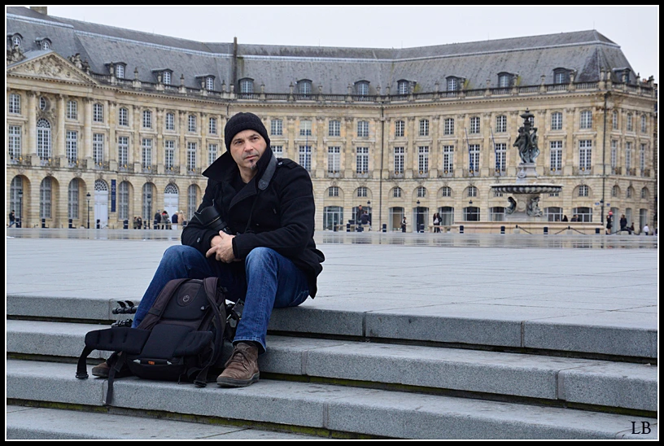
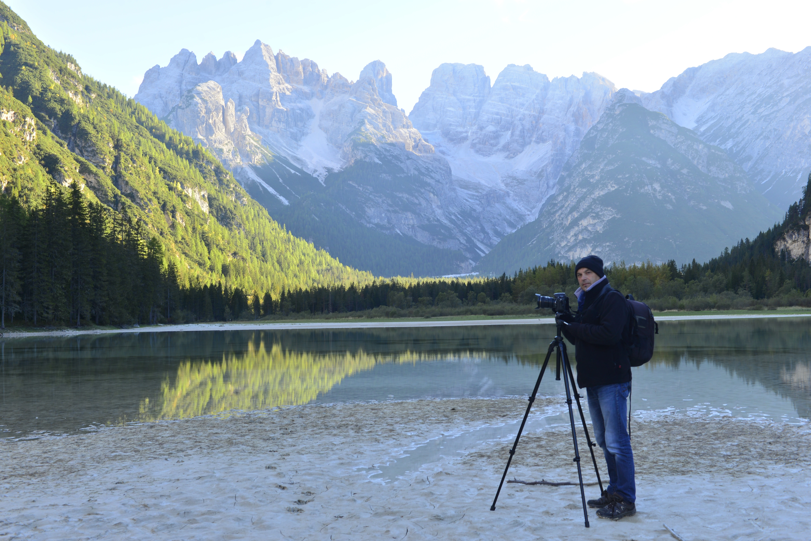

Artiste photographe, Philippe BOUSSEAUD a longtemps partagé son activité entre l’édition (livres, magazines et reportages) et le domaine artistique au travers de multiples expositions (salons, festivals et expositions personnelles) en France et à l’étranger.
Il est collaborateur de l’agence photographique NATURIMAGE, formateur et créateur de COURS-ET-STAGES PHOTO, ainsi qu'enseignant à l’université de Clermont-Ferrand.
Aujourd’hui, c’est vers l’artistique et l’enseignement qu’est dirigée la plus grande partie de son activité. Il est l’auteur de 14 ouvrages, notamment :
- Désert de couleurs (éditions Romain-Pages)
- Toscane (éditions Romain-Pages)
- Islande, terre de feu, rêve de glace (éditions Romain-Pages)
- Haute-Loire, l’aube de la nature (éditions Jardin des Arts)
- Un retour à Venise (éditions Romain-Pages)
- Plateau du Mézenc (éditions Jardin des Arts)
- Le Puy-en-Velay (éditions Jardin des Arts)
- St Michel d’Aiguilhe (éditions Jardin des Arts)
- Cathédrale Notre-Dame du Puy (éditions JDA)
2 catalogues d'exposition :
- Voyage en terre du milieu
- Songe et couleurs sur le chemin
De très nombreuses expositions dont :
- Berlin 2010 - Salon de la photo de Paris 2010 - Festival international de la photo de nature –
Montier-en-Der 2010 - CCI du Loir-et-Cher 2010 - Qingdao (Chine) échange culturel franco-chinois 2011 -
Naturimage festival (Vosges) 2011 - Festival photo de Pralognan-la-Vanoise 2011 - RPG de St Julien-en-Genevois 2011 -
Hôtel-Dieu (Le Puy-en-Velay) en partenariat avec un peintre chinois 2012 - Musée d’Art Contemporain de Shanghai (Chine) 2012 -
Musée du St Jacques de Compostelle (Le Puy-en-Velay) 2013 - Artistes à tous vent de Clermont Fd 2014 -
Musée du St Jacques de Compostelle (Le Puy-en-Velay) 2014 - Espace culturel (castres) 2015 -
Festival international de la photo de Namur (Belgique) 2015 - Conseil général de Haute-Loire 2016 -
Château du Castanet (Lozère) 2017 - Bordeaux Espace Beaulieu 2017 - Village d’artiste de Marols 2018 -
111 des Arts Toulouse, Lyon 2018 - Vœux d’artistes Marseille 2018 - 111 des Arts Paris et Lyon 2019 –
Festival Regards créatifs (St Etienne) 2021 – 111 des Arts Paris, Lyon et Toulouse 2022 – Point milieu, (St Etienne) 2024 –
Nasbinals (cantal) 2024